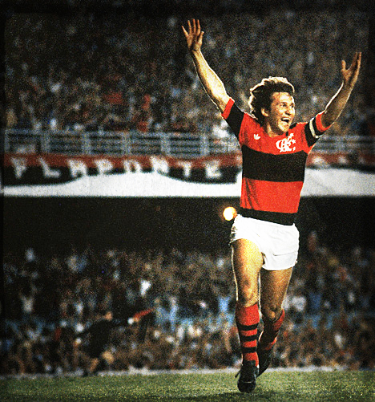
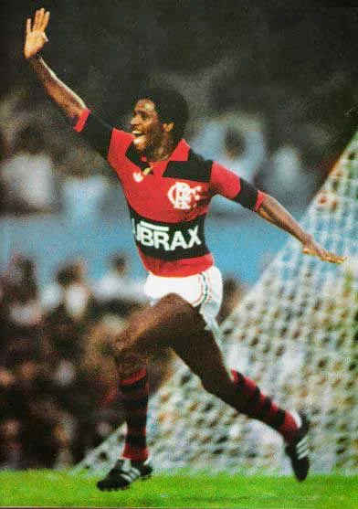
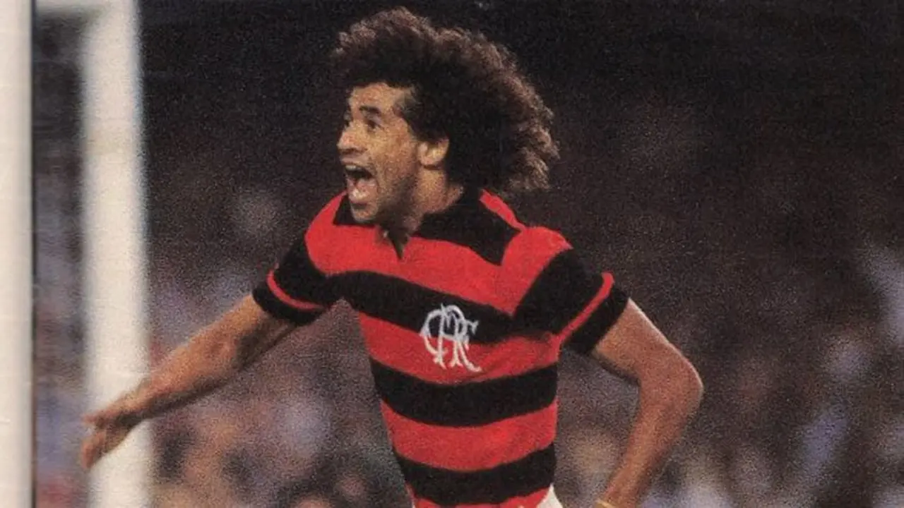

Heróis que vestiram o manto sagrado
Alguns dos homens que escreveram a história do Flamengo.
Arthur Antunes Coimbra (Zico)

Adílio de Oliveira Gonçalves

João Batista Nunes de Oliveira

Gabriel Barbosa Almeida (Gabigol)